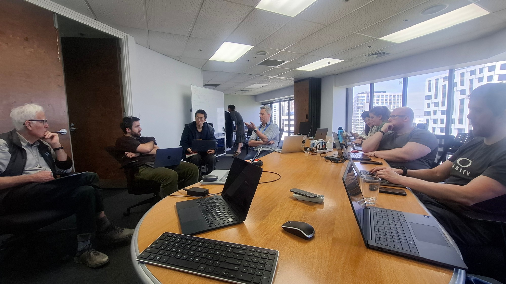
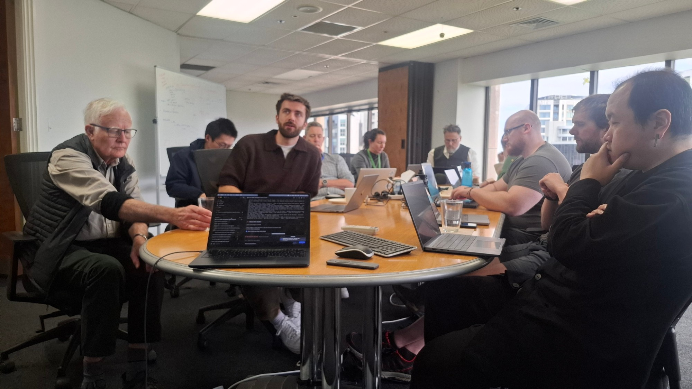
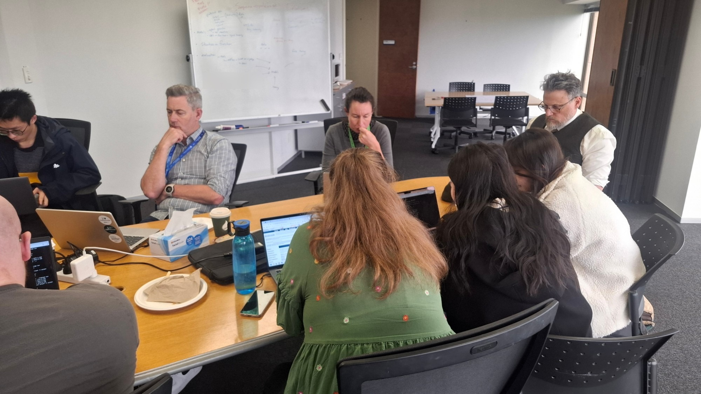
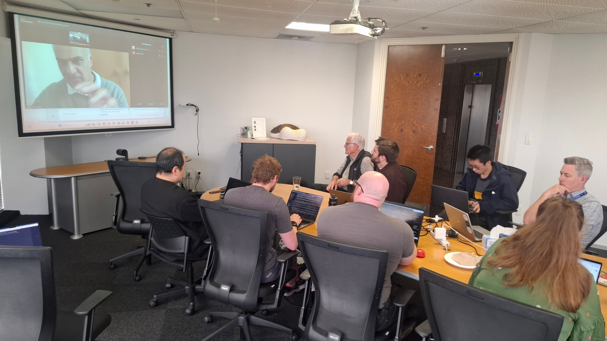
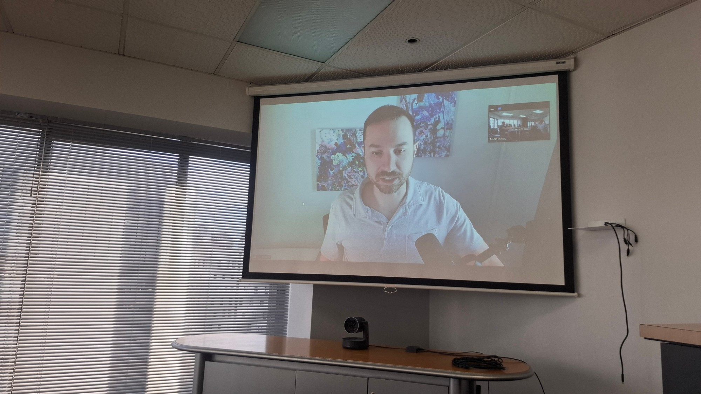

01Introduction
Biology has a ladder of scales: sequence, structure, atoms in motion, cells and tissue. Machine learning now has a ladder running alongside it. Each rung of that second ladder is a surrogate: it stands in for a calculation that is too expensive to run at the scale you need, such as docking a billion molecules or sampling the rare events of an ion crossing a membrane. Chain enough of them and you could, in principle, go from a compound to its physiological effect.
The Auckland hub asked how far up that ladder you can climb before you stop trusting the answer. Two groups took rungs at opposite ends:
- Rung 1Screening at scale. A graph-network surrogate for docking, fast enough to rank a billion-molecule library on one machine.
- Rung 2From atoms to a cell. A pipeline that turns molecular dynamics into a thermodynamically consistent model that a cell-scale physiology model can run. Nothing at the 2025 event carried a molecular signal this far.
Both were held to the hub's four questions: what's the ground truth, what's the simple baseline, what would change our mind, and where would it break?
02Methods
Rung 1VDSAI Lightning: a docking surrogate at billion-molecule scale
The surrogate predicts a docking fitness score from the 2D molecular graph, so that only the compounds it ranks highest are docked. It runs inside an active-learning loop: train on docked compounds, screen the library, dock the top picks, repeat. VDSAI Lightning replaces the incumbent AMPL GraphConv stack (TensorFlow) with an AttentiveFP network in PyTorch Geometric and PyTorch Lightning, logged to MLflow.
- Data. A 3.5M-molecule training set (active-learning round 4), a 0.5M Enamine diversity set, the round-3 training set (2.28M rows), and
pool_3, a 98.3M-molecule chunk of ZINC, for the head-to-head. Then the full 925M-molecule ZINC screen. - Protocol. Scaffold split, seed 42, test set evaluated once. Both stacks trained on each dataset. Wall clock is compute time with queueing excluded.
- Tuning. An Optuna study built into the pipeline (
vdsai tune): 40 trials of 40 epochs each, scored on validation only, with a median pruner after 10 epochs. The best settings were retrained for 100 epochs. - Ground truth. The docking of all of
pool_3. Its top 1M rows hold 972,954 distinct compounds. Recall is the share of those that appear in a model's top 1M picks. None was in either model's training set: 545 overlap, and removing them changes nothing. - Baselines. Random picks, ranking by heavy-atom count, and AMPL. We also docked the same chunk twice to measure the noise ceiling.
Rung 2Structure to physiology: MD → learned landscape → bond graph → CellML
The pipeline consumes trajectories and a definition of the coordinates of interest. Nothing in it is specific to one molecule.
- Measure D first, then learn F. If both are learned from displacements, only the product D·∇F is identified, and the network trades one off against the other. So the diffusivity D comes from the second Kramers–Moyal moment, without reference to F, and is frozen. A port-Hamiltonian network then learns F from the drift −D∇F.
- The second law is structural. With D positive semi-definite and F a scalar potential, dF/dt = −∇Fᵀ D ∇F ≤ 0 for any weights at any point in training. It is never a penalty term.
- Let the dynamics choose the states. States come from the MSM spectral gap, and barriers from a minimax saddle search, with rates following ln κ ≈ ln D − βF‡.
- Bond graph with an electrical port. Ce/Re components on 0/1 junctions, after Hunter et al. (bioRxiv 2024.06.26.600892). Each hop carries a fraction of the field, zr = zion(δj − δi), which telescopes to exactly one charge around the cycle. Charge closure is built in rather than assumed.
- Write CellML 2.0, validated with libcellml, ready to compose into heart or kidney cell models.
Systems. An analytic double well, where the answer is known exactly. Alanine dipeptide, for validation against an independent MSM (deeptime). A 4D model system, for scaling. The KcsA potassium channel as the application, with site positions and pore radius measured from the 1K4C crystal structure. For KcsA the free-energy surface is a literature-constrained analytic stand-in, fixed to Bernèche & Roux's 2–3 kcal/mol maximum barrier. Only D comes from our filter MD. Every artifact records which half came from where.
Not fooling ourselves. Every test has a control that must give the wrong answer. Every bug found gets a regression test. A mutation audit breaks the code on purpose to check that the suite notices.
03Results
(a) Recall of the docking top 1M
pool_3 · 98,271,339 ZINC molecules · 1M picks each
(b) KcsA current–voltage curve from the bond graph
140 mM K⁺ in · 4 mM out · 298 K
Rung 1Faster and better than the incumbent
| Head-to-head | Lightning | AMPL | Difference |
|---|---|---|---|
| 3.5M set: training wall clock | 2 h 26 min | 32 h 26 min | 13.3× faster |
| 3.5M set: test R² / RMSE / MAE (tuned) | 0.752 / 4.41 / 3.43 | 0.690 / 4.61 / 3.62 | better on all three |
| 0.5M Enamine: training wall clock | 9 min 27 s | 1 h 57 min | 12.4× faster |
| 0.5M Enamine: test R² | 0.575 | 0.565 | +0.009 |
| pool_3: training, end to end | 56 min | 25 h 22 min | 27× faster |
| pool_3: recall of docking top 1M | 35.0% | 32.3% | +2.7 points |
| pool_3: same, at AMPL's 923,678 distinct | 33.4% | 32.3% | +1.1 points |
| pool_3: docking top 100k found | 60.4% | 56.4% | +4.0 points |
| pool_3: GPU hours to score | 0.44 | 166.4 | 381× fewer |
| pool_3: time to score, as run | 26 min (1 GPU) | 4 d 9 h (5 L4 jobs) | 241× faster |
Rank by size recovers 2.6% and random picks 1.2%. AMPL's top 1M rows hold 923,678 distinct compounds because it scores protonation states as separate rows. The two stacks' data preparation differs, so the 3.5M-set test sets are not identical (163,972 against 118,864 molecules). The pool_3 comparison is close to like-for-like.
Tuning helped through a larger encoder (hidden size 128 → 256, 3 → 4 graph layers) and much lighter regularisation (dropout 0.20 → 0.002, weight decay 10⁻⁴ → 4×10⁻⁶). Early enrichment improved with it: EF1% 7.19 → 7.48, BEDROC 0.699 → 0.717. With the tuned model, 925 million ZINC molecules were scored in 4 h 27 min on one workspace. Docking the same library takes about 100 days, and AMPL was estimated at 600 GPU hours. It is the first time this group could screen a library this size.
Rung 2A physiology component that inherits its physics
- Instrument check. On the toy system D is recovered to 0.5%. The learned landscape correlates at 0.984 with a potential the network never saw. A 4D potential is recovered at r > 0.9 with fewer than 10k parameters, at a cost that grows with frames rather than with the number of coordinates.
- Admissible versus merely accurate. On cycles of the state graph the structured model's affinity residual is ~10⁻¹⁵. An unconstrained neural SDE that fits the data about as well gives ~10⁻⁴ on contractible cycles and ~10⁻² on winding cycles. Both fit. Only one is physically admissible.
- A measurement, not a failure. On alanine dipeptide the bond-graph and MSM slowest timescales differ about 17×. That gap is reconciled exactly by D measured at a ~125 ps lag, the memory time of (φ, ψ). On the truly Markovian toy the same diagnostic returns ≈ 1.
- What sets the rates. ln κ ≈ ln D − βF‡ was derived and then measured. Saddle features give R² = 0.871 against 0.793 for endpoint free energies. Barrier-aware features cut κ-transfer error from 1.80 to 1.17 RMSE. Cheap endpoint-only rate surrogates fail for a reason.
- KcsA. Sites come from the 1K4C structure; S0 sits 1.3 Å further out than uniform spacing implies. The reversal potential matches Nernst across a 100-fold range of external K⁺, and the CellML carries the electrical port and validates with libcellml.
| [K⁺]out (mM), 140 in | 1.4 | 4 | 14 | 40 | 140 |
|---|---|---|---|---|---|
| Model Erev (mV) | −118.259 | −91.300 | −59.130 | −32.171 | 0.000 |
| Nernst EK (mV) | −118.259 | −91.300 | −59.130 | −32.171 | 0.000 |
| |difference| (mV) | 3×10⁻¹² | 8×10⁻¹³ | 1×10⁻¹¹ | 4×10⁻¹³ | 2×10⁻¹⁴ |
Recomputed in this repository from the team code; values in data/kcsa_permeation.json.
What didn't work, stated up front
- The KcsA landscape is constrained, not learned. It is fixed to published barrier heights. The figures are "consistent with the published PMF", not "the published PMF".
- Trapped ions can't pin down barriers. Filter ions in our closed-gate MD visit 6 of 40 bins and never cross between sites. F at the barriers is extrapolation, and ln κ depends on exactly that.
- Conductance is about 20× low: 4.5 pS slope conductance against ~100 pS experimental. The model is single-ion, KcsA conducts by multi-ion knock-on, and fixed-charge force fields independently run 2–10× low. Pooling ions into one coordinate makes an MSM report ~3 metastable states where there is 1, and the MSM's own tests cannot detect this.
- So we moved to gramicidin A, a single-file channel where one ion at a time is the right model. It is now built from 1JNO in a DMPC bilayer: 25,388 atoms, 0.15 M KCl, Amber ff14SB/lipid17. Equilibration passes all eight blocking checks. Area per lipid is 59.3 Ų against 60.6 experimental, backbone RMSD 0.52 Å, with 11 waters in the pore. Production runs at ~100 ns/day on a laptop GPU.
Engineering: a fast test suite that runs in seconds, a regression test for every bug hit, and a mutation audit that catches 12 of 14 deliberate breakages on the fast tier. Six of the twelve catalogued bugs produced plausible wrong numbers with no error. Details are in the team repo's HANDOVER.md.
The four questions, answered
Rung 1: docking of the full 98.3M-molecule pool_3, measured twice to get its noise.
Rung 2: exact toy potentials and D, an independent MSM, the Nernst equation, and experimental conductance.
Rung 1: random (1.2%), rank by size (2.6%), and the incumbent AMPL (32.3%).
Rung 2: an unconstrained neural SDE that fits as well and violates thermodynamics.
Rung 1: recall that did not beat AMPL at equal distinct compounds. It still does, by 1.1 points.
Rung 2: a reversal potential off Nernst, or a cycle residual above 10⁻¹⁰.
Rung 1: at the docking noise ceiling, and wherever docking itself is wrong.
Rung 2: at barriers MD never samples, and on multi-ion channels with a single-ion model.
04Conclusions
A surrogate can be faster and better than the incumbent at the same time. Lightning trains 12–27× faster, scores a pool with 381× fewer GPU hours, and recovers more of the docking top set than AMPL. Billion-molecule screening goes from a multi-day cluster campaign to an afternoon on one machine. The ceiling is now the ground truth: docking agrees with itself at r = 0.30.
Physics can be carried from atoms to a physiology component as an architectural invariant. Measuring D first makes the learned landscape identifiable. Building the bond graph from it makes the second law, detailed balance and charge closure hold by construction. The output is a CellML model a cell model can import, and its reversal potential is a check that a broken model fails.
Each link is only as good as its hardest region. For docking surrogates that is the top tail. For MD-derived models it is the barrier. Saying where each link breaks is what makes the chain usable.
So how far can a chain of surrogates take us? Further than we expected, as long as every link carries its own evidence.
05Future directions
- Join the rungs. Lightning's top picks go to a co-folding or pose model (Boltz-2, OpenFold3), then MD with a classical or machine-learned potential, then the bond graph, then a cell model. The result is a compound-to-physiology chain in which every link reports its own uncertainty.
- Raise the screening ceiling. Use repeat or consensus docking as a cleaner target, add 3D-aware or MLIP rescoring of the top tail, and keep Lightning in the active-learning loop. Compare against sequence models (ChemBERTa-2, MolFormer) at equal tuning budget.
- Learn the barrier, not just the wells. Run gramicidin A production MD, then an SRV progress coordinate, then weighted-ensemble sampling (WESTPA) across the barrier. A learned landscape then replaces the literature surface. After that, permutation-invariant multi-ion coordinates take KcsA back on properly.
- Perturbations as physiology. Model drug block and mutations as changes to the bond graph's parameters, and compose the channel into a cardiac or renal cell model to see the effect at the scale pharmacology cares about.
- Share the evaluation, not just the models. Release both harnesses so other surrogates can be held to the same four questions.
06The event
Run by the Auckland hub of the global Open Scientific Intelligence Hackathon, hosted by Waipapa Taumata Rau, University of Auckland. Hub site: drai-inn.github.io/osi-hackathon-auckland.





Team
- Nick Jones
- Chris Scott
- Jack Copping
- Te Xiao
- Claire Rye
- Samantha Rickard
- Jarrah Dowrick
- Jack Flanagan
- Peter Hunter
- Carvin Chen
- Jun Huh
- Neil Blake
- Jagir Hussan
- Ben Curran
- Lizhe Hong
- Mohamed Elwakdy
- Esther Sun
Code, data and platforms
VDSAI Lightning is reported from its results; its code is not public. Platforms and tools: PyTorch Geometric, PyTorch Lightning, Optuna, MLflow, AMPL (baseline), NeSI HPC (H100 and L4 GPUs), OpenMM, deeptime, libcellml, ZINC and Enamine libraries, and Claude Code for agentic development.